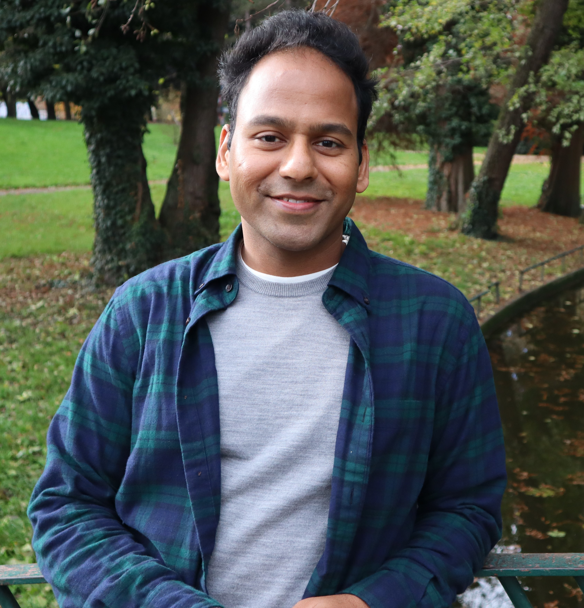

A little about me: I'm on a career break due to health reasons. Previously, I was a Research Scientist at Naver Labs Europe in Grenoble, France. In the past, I've been a data analyst with General Electric in Bangalore, India.
My research interests lie in machine learning and combinatorial optimization. I completed my PhD under Dr M. Pawan Kumar in the OVAL group at University of Oxford. I was an undergraduate student at the Indian Institute of Technology, Kharagpur.
Curriculum Vitae: [pdf]
Email: pankaj.pansari1@proton.me
Conference Proceedings:
Journal Paper: